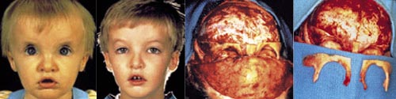
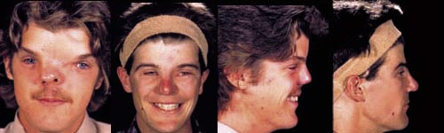
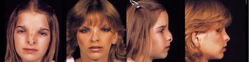
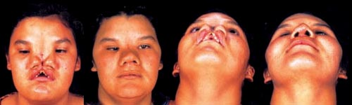

Hypertelorism
Description
Hypertelorism, or wide-set eyes, is a physical finding that
may occur alone or as a result of, or in association with, a number
of congenital deformities. They include frontonasal dysplasia,
craniosynostosis (such as is seen with Aperts,Crouzons, and related
syndromes), abnormalities or developmental problems related to nasal
deformity; facial clefting; hydrocephalus; or Encephalocele.
Hypertelorism is diagnosed-usually at birth-when the interorbital
distance is greater than normal, with "normal" defined as less than
20 mm at birth. With growth of the mid-face, this disproportion
usually becomes more pronounced. In adults, a distance greater than
25 to 30 mm is considered abnormal.
Expectations and Treatment
Although it can be corrected at a later time, we prefer to
correct this deformity between the ages of three and five years
after there has been a certain amount of development of the
mid-facial and orbital bones.
In young children, the usual procedure is an inverted U-avoiding the
tooth-bearing area. In older children, we may use either total
translocation of the four walls of the orbit or a bipartition
procedure, depending on the type and involvement of the deformity.
The primary correction of hypertelorism involves surgical
reconstruction of the nasal deformity that is universally associated
with this deformity. In patients with Encephalocelee, there may be a
long-nose syndrome which needs to be corrected. In frontonasal
dysplasia and facial clefting, there is a short nose which needs
elongation with soft-tissue procedures including VY techniques and
forehead flaps.
Due to expansion that tends to recur in the soft tissue and in the
medial canthal region as the patient grows and develops, these
procedures usually must be repeated-more than three times on
average-before definitive correction of this deformity is achieved.
Results can be anywhere from good to excellent, depending upon the
artistry of the surgeon performing the reconstruction of the nose.
Case Studies

Correction of Hypertelorism by Using the Inverted-U Technique
Preoperative frontal view of 1-year-old with hypertelorism and
deformed skull. Postoperative frontal view 3 years after surgical
corrections using the specialized techniques developed by Dr.
Salyer. Intraoperative views showing surgical correction.

Hypertelorism
Hypertelorism from frontonasal dysplasia. Preoperative view
21-year-old patient with wide set eyes. Postoperative view 5 years
after correction of hypertelorism and nasal reconstruction.
Preoperative lateral view shows short nose and profile before
corrective surgery. Postoperative lateral view after lengthening of
the nose and improved profile.

Hypertelorism with Nasal Deformity
Preoperative frontal view of a 12 year old patient with
hypertelorism and nasal deformity. Postoperative frontal view 2
years after hypertelorism correction with nasal reconstruction. Pre
and postoperative lateral views.

Hypertelorism due to Midline Facial Cleft
Preoperative frontal view of a 15-year-old patient with a
midfacial cleft and hypertelorism, a bifid nose, and a deformed
maxilla. Postoperative frontal view 3 years after surgical
correction. Preoperative submental vertex view shows lack of nasal
projection of the bifid nose. Postoperative submental vertex of the
same patient after reconstruction of the nose and lip.